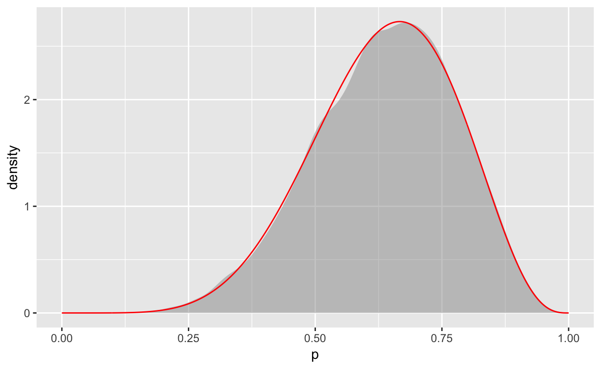

This web app provides alternative code for each code chunk presented in Statistical Rethinking by Richard McElreath. Many of the chunks have been adapted from Randy Pruim’s github repo. The main idea is to present tidier code with preference for
ggplot2 for graphics.There is no need for alternative code here.
PrPV <- 0.95
PrPM <- 0.01
PrV <- 0.001
PrP <- PrPV * PrV + PrPM * (1 - PrV)
(PrVP <- PrPV * PrV / PrP)## [1] 0.08683729To begin, we can define a new function, densify(), that is useful for rescaling prior and posterior distributions when using the grid-approximation method. It takes the kernel of a gridded (i.e. rasterized) distribution and rescales it to be a proper density.
# this function turns a "rasterized" kernel into a true (rasterized) density function
# useful for rescaling priors and posteriors when using the grid method
densify <-
function(x, y) {
if ( diff(range(diff(x))) > 0.1 * min(abs(diff(x))) )
stop("`x` must be (approximately) equally spaced.")
width <- mean(diff(x))
y / sum(y) / width
}Here, we again use mutate() to avoid repeatedly using the same object names. This code chunk is computing the posterior via grid approximation, where the grid for p is 1000 values between 0 and 1.
Water9 <-
data_frame(p = seq(from = 0, to = 1, length.out = 1000)) %>%
mutate(
prior = 1,
likelihood = dbinom(6, size = 9, prob = p),
posterior = likelihood * prior,
posterior = posterior / sum(posterior),
posterior.dens = densify(p, posterior)
)You book only stores the sampled values of \(p\) from the posterior as a vector (water9.ps.p); however, if you use ggplot2 for plotting it is useful to have them organized as a data frame (water9.ps.df).
# vector
water9.ps.p <- with(Water9, sample(p, prob = posterior, size = 1e4, replace = TRUE))
# data frame
water9.ps.df <- data_frame(index = 1:length(water9.ps.p), p = water9.ps.p)Here, we recreate the two panels of Figure 3.1 using 1 ggplot2.
# Chunk 3.4
ggplot(water9.ps.df, aes(x = index, y = p)) +
geom_point() +
labs(x = "index", y = "p")# Chunk 3.5
ggplot(water9.ps.df) +
geom_density(aes(x = p), color = NA, fill = "gray60", alpha = 0.5)We could also add the rasterized posterior distribution enabling comparison between the distribution of the samples from the posterior and the distribution itself.
# Add the posterior for reference
ggplot(water9.ps.df) +
geom_density(aes(x = p), color = NA, fill = "gray60", alpha = 0.5) +
geom_line(data = Water9, aes(x = p, y = posterior.dens), color = "red")
There are multiple ways to add up the posterior probability where \(p < 0.5\). Here are two reasonable approaches:
The book nests everything together. Remember that we stored the posterior in the Water9 data frame.
sum(Water9$posterior[Water9$p < 0.5])## [1] 0.1718746We could also fully embrace the chaining syntax and dplyr tools. Here we create two groups: one where \(p < 0.5\); the other where \(p \ge 0.5\). Next, the values of the posterior are summed within each group.
Water9 %>%
group_by(p < 0.5) %>%
summarize(sum(posterior))Approach to calculate the frequency (estimated probability) that the parameter value is below 0.5:
sum(water9.ps.p < 0.5) / length(water9.ps.p)## [1] 0.1722You can also find the probability of intersections using &:
sum(water9.ps.p > 0.5 & water9.ps.p < 0.75) / length(water9.ps.p)## [1] 0.6038Basic statistical functions are also important to summarize the posterior distribution:
quantile(water9.ps.p, 0.8)## 80%
## 0.7597598quantile(water9.ps.p, c(0.1, 0.9))## 10% 90%
## 0.4494494 0.8119119Here, we calculate the posterior via grid approximation and then draw 1000 samples from it.
Water3 <-
expand.grid(p = seq(from = 0, to = 1, length.out = 1000)) %>%
mutate(
prior = 1, # recycling makes this into 1000 1's
prior = prior / sum(prior),
likelihood = dbinom(3, size = 3, prob = p),
posterior = likelihood * prior,
posterior = posterior / sum(posterior),
posterior.dens = densify(p, posterior) # true density
)
water3.ps.p <- with(Water3, sample(p, size = 1e4, replace = TRUE, prob = posterior))Percentile intervals can be calculated using the PI() function in the rethinking package. You could also use the quantile() function.
PI(water3.ps.p, prob = 0.5)## 25% 75%
## 0.7067067 0.9309309Highest posterior density intervals are calculated using the HPDI() function in the rethinking package.
HPDI(water3.ps.p, prob = 0.5)## |0.5 0.5|
## 0.8388388 0.9989990If you are simply investigating what the maximum a posteriori (MAP) estimate of \(p\) is, you can simply arrange your data frame in descending order by the posterior probability and print only the first row:
Water3 %>%
arrange(desc(posterior)) %>% #desc() for descending order
head(1)If you want to return the MAP estimate of \(p\), then using indexing makes sense (similar to the code shown in the book):
Water3$p[which.max(Water3$posterior)]## [1] 1The chainmode() function returns the estimated mode of a density computed from samples. The (optional) argument adj adjusts the amount of smoothing used to estimate the smoothed density. To better understand this, explore what happens when you use adj = 1 (default amount of smoothing), adj = 0.1 (less smoothing), and adj = 0.01 (lots less smoothing). Do the same for the adjust parameter in gf_density().
chainmode(water3.ps.p, adj = 1)
gf_density( ~water3.ps.p, adjust = 1)No need for a change here.
mean(water3.ps.p)## [1] 0.7992801median(water3.ps.p)## [1] 0.8398398We can use the with() function to avoid using the $ operator to extract columns, but it isn’t necessary. The below commands are equivalent:
with(Water3, sum(posterior * abs(0.5 - p)))## [1] 0.3128752sum(Water3$posterior * abs(0.5 - Water3$p))## [1] 0.3128752Another approach is to estimate the expected loss from the posterior samples. There will be small differences here due to sampling variability:
mean(abs(water3.ps.p - 0.5))## [1] 0.3118853You book creates a new loss vector in the working space. Instead, you can add a loss column to the Water3 data frame:
Water3 <-
Water3 %>%
mutate(loss = sapply(p, function(d) {sum(posterior * abs(d - p))})
)Again, we can either extract the minimum value or arrange the data frame to reveal the minimum value.
# extract the minimum
with(Water3, p[which.min(loss)])## [1] 0.8408408# a tidy alternative based on arranging the data frame
Water3 %>%
arrange(loss) %>%
head(1)No need for a change here.
dbinom(0:2, size = 2, prob = 0.7)## [1] 0.09 0.42 0.49No need for a change here.
rbinom(1, size = 2, prob = 0.7)## [1] 1No need for a change here.
rbinom(10, size = 2, prob = 0.7)## [1] 1 1 2 2 2 1 2 2 2 2No need for a change here.
dummy_w <- rbinom(1e5, size = 2, prob = 0.7)
table(dummy_w) / 1e5## dummy_w
## 0 1 2
## 0.09161 0.41978 0.48861Here is ggplot2 code to create a histogram for discrete random variables. For continuous random variables use geom_histogram() rather than geom_bar().
data_frame(w = dummy_w) %>%
ggplot(aes(x = w)) +
geom_bar() +
labs(x = "dummy water count")No need for a change here.
w <- rbinom(1e4, size = 9, prob = 0.6)The only change here is that we named the vector of samples more meaningfully.
w <- rbinom(1e4, size = 9, prob = water9.ps.p)Again, let’s avoid recycling vector names by storing the pieces in a data frame.
Water9a <-
expand.grid(p = seq(from = 0, to = 1, length.out = 1000)) %>%
mutate(
prior = 1,
likelihood = dbinom(6, size = 9, prob = p),
posterior = likelihood * prior,
posterior = posterior / sum(posterior),
posterior.dens = densify(p, posterior)
)
set.seed(100)
sampled_p <-
with(Water9a, sample(p, prob = posterior, size = 1e4, replace = TRUE))No need for a change here, this simply reminds you that you can input vectors by hand.
birth1 <- c(1, 0, 0, 0, 1, 1, 0, 1, 0, 1, 0, 0, 1, 1, 0, 1, 1, 0, 0, 0, 1, 0, 0, 0, 1,
0, 0, 0, 0, 1, 1, 1, 0, 1, 0, 1, 1, 1, 0, 1, 0, 1, 1, 0, 1, 0, 0, 1, 1, 0,
1, 0, 0, 0, 0, 0, 0, 0, 1, 1, 0, 1, 0, 0, 1, 0, 0, 0, 1, 0, 0, 1, 1, 1, 1,
0, 1, 0, 1, 1, 1, 1, 1, 0, 0, 1, 0, 1, 1, 0, 1, 0, 1, 1, 1, 0, 1, 1, 1, 1)
birth2 <- c(0, 1, 0, 1, 0, 1, 1, 1, 0, 0, 1, 1, 1, 1, 1, 0, 0, 1, 1, 1, 0, 0, 1, 1, 1,
0, 1, 1, 1, 0, 1, 1, 1, 0, 1, 0, 0, 1, 1, 1, 1, 0, 0, 1, 0, 1, 1, 1, 1, 1,
1, 1, 1, 1, 1, 1, 1, 1, 1, 1, 1, 0, 1, 1, 0, 1, 1, 0, 1, 1, 1, 0, 0, 0, 0,
0, 0, 1, 0, 0, 0, 1, 1, 0, 0, 1, 0, 0, 1, 1, 0, 0, 0, 1, 1, 1, 0, 0, 0, 0)If you don’t want to stare at 0s and 1s, you can use a more transparent coding scheme, such as F and M:
BirthSex <-
data_frame(
first = c("F", "M") [1 + birth1],
second = c("F", "M")[1 + birth2]
) %>%
mutate(boys = (first == "M") + (second == "M"), girls = 2 - boys)
head(BirthSex)No need for a change here, this simply loads the birth1 and birth2 vectors from the R package rather than using manual entry.
library(rethinking)
data(homeworkch3)If you used the more transparent coding scheme, you can create cumulative sums by groups:
BirthSex %>%
group_by(boys) %>%
summarise(n = n()) %>%
mutate(cumsum(n), total.boys = boys * n, cumsum(total.boys))